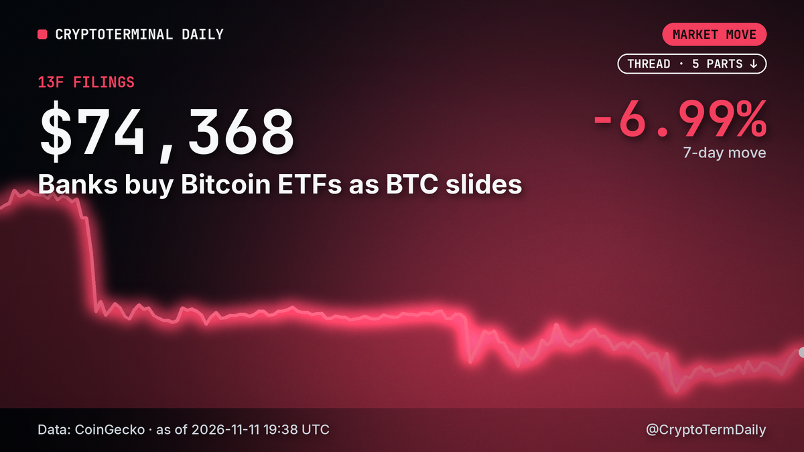

Bitcoin's Record Streak Nobody Wants

Bitcoin is edging toward a first in its 18-year life: two calendar years in a row that end in the red. Decrypt flagged the pattern this week, and the numbers show how narrow the gap to avoiding it still is.
Where the year stands
Bitcoin closed 2025 down 6.34%. In 2026 it has so far lost another 15.65%, changing hands near $73,850 on Nov. 10. Its opening price for this year was roughly $87,500, and that is the line it must clear before Dec. 31 to keep the streak from becoming official.
Fifty days remain. From the Nov. 10 level, reaching the opening price takes a gain of about 18.5%. That is a big move for under two months, though Bitcoin has produced larger ones before.
Why the streak is new
Every earlier losing year in Bitcoin's history was followed by a winning one. Even the two worst bear markets, 2018 and 2022, did not break that rhythm. In 2018 the coin fell 73.56%, and in 2022 it dropped 64.27%. Both were then followed by rebounds: roughly 92% in 2019 and more than 155% in 2023.
So the pattern is unusually consistent, and that is exactly why a second red year would stand out. It would not be a story about a crash. It would be a story about a market that failed to bounce.
A milder kind of losing
The odd part is how gentle the current stretch looks next to those earlier collapses. Put the two annual declines together and the compounded total is approximately 21%. Compare that with the 73.56% and 64.27% years, which erased most of what holders had.
Bitcoin's 2024 also changes the picture. It rose more than 120% that year, so anyone who bought at the start of 2024 is still sitting on substantial gains even after the slide since.
Calendar boundaries versus the peak
Annual candles hide as much as they show. Bitcoin touched around $126,000 in October 2025 and later sank below $58,000 during 2026. Measured peak to trough, that is a fall of more than 50%, a far heavier hit than the roughly 21% shown by two yearly bars.
The same drawdown can look mild or severe depending on where the calendar cuts it. A slow bleed across several years can produce a longer losing streak without ever delivering one catastrophic year, and the reverse is also possible.
Banks keep buying anyway
The same week, quarterly filings showed Barclays lifting its stake in BlackRock's spot Bitcoin ETF by 48%, to about $187 million, while Citigroup disclosed a new $119 million position in Fidelity's fund. Bitwise data shared with Cointelegraph put banks at 4.9% of early third-quarter holdings, up from 3.2% in the second. That is a small slice, but it is growing while the price falls.
What analysts point to
Observers cited by Decrypt link the smaller drawdowns to a changing buyer base. Institutions hold more of the supply, spot exchange-traded funds give them a regulated way in, and liquidity is deeper than in earlier cycles. Those factors may help explain why this downturn feels different from past ones, but the article is clear that they have not removed the possibility of sharp crashes.
How to read the streak
A streak of two losing years says something about duration, not depth. The reporting itself separates the two ideas: a market can decline slowly over several calendar years without suffering the kind of single-year wipeout seen in 2018 or 2022.
It also helps to keep the statistic in proportion. Calendar-year returns are an arbitrary slicing of a continuous price series. A rally in the final weeks of December would turn the record into a footnote, while a flat finish would write it into the history books.
What to watch
The number that matters is the roughly $87,500 opening price. Every day Bitcoin trades far below it makes the record more likely. Beyond that, a third consecutive decline in 2027 would extend the streak, though that scenario is still hypothetical.
For now the market sits in an uncomfortable middle: not a crash by historical standards, yet close to a milestone no bull has ever wanted to own. The next fifty days decide which description sticks.